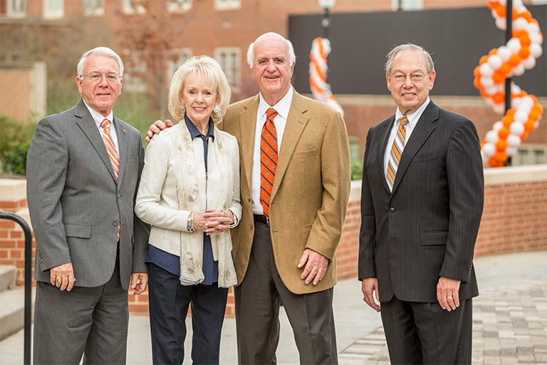
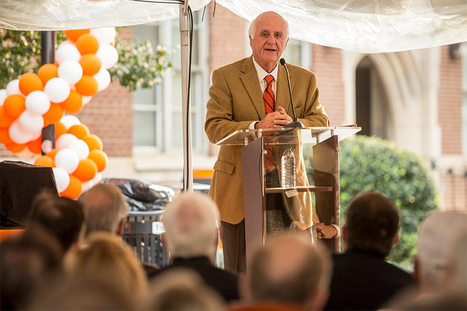
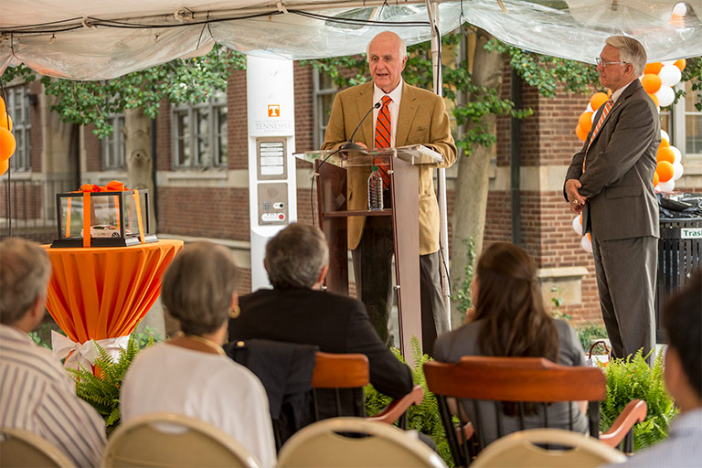
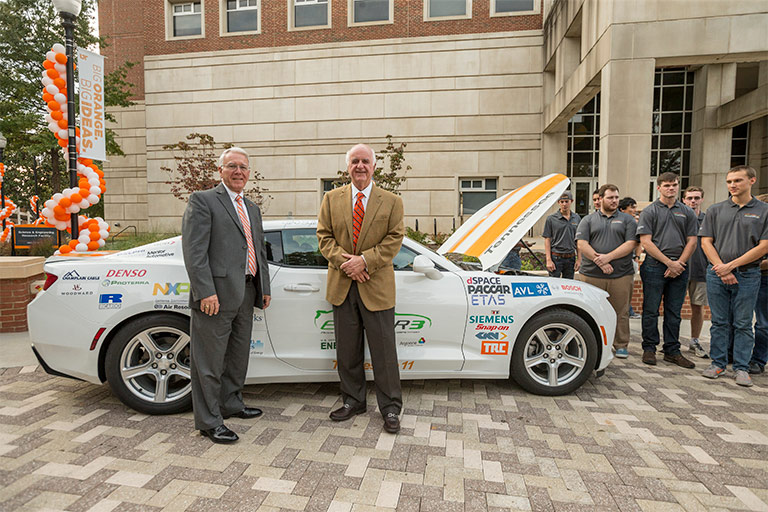

My goal is for the University of Tennessee to be known for their education and the product they put out. Ann and I both believe that education is what fuels success—not just our own success, but the success of UT and the state as well. I’m deeply honored and will try to live up to the billing.”
John D. Tickle,
reflecting on the college naming.
A first-generation college student from Bristol, Tennessee, John Tickle worked throughout college to pay his own way. With a strict work ethic and shrewd business sense, he rose through the ranks of several engineering companies before becoming the president of the company he would come to own and rename as Strongwell. Once there, he took a strategic risk by buying back a patent for a lightweight but strong composite material he had previously developed and patented, knowing how he could use it to create a global market demand. Today, his company is the world's largest producer of structural fiber-reinforced polymer composites manufactured by both pultrusion and unique, in-house technology.
Tickle has received the 2013 Lifetime Achievement Award from the American Composites Manufacturers Association and the 2012 UT Distinguished Alumni Award with his wife, Ann, among numerous other awards. On October 14, 2016, the university’s Board of Trustees voted to name the college the Tickle College of Engineering in recognition of John and Ann Tickle’s transformational support.
Tickle College of Engineering Naming Ceremony



